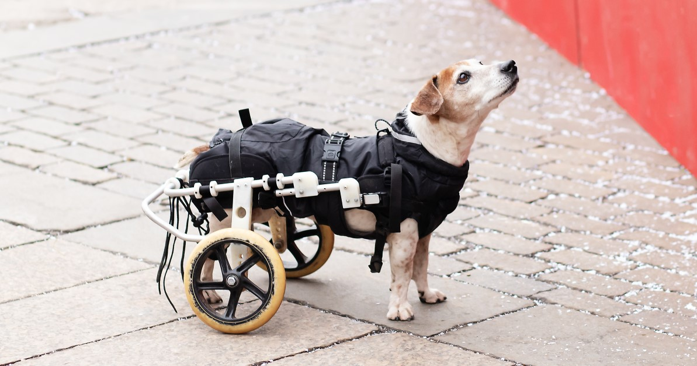

Get involved with us
Your contribution can make a difference in the lives of injured and disabled dogs. Help us provide them with the care they need to heal and thrive.



Welcome to Dog Rescue: Making a Difference, One Paw at a Time:
Our vision is to create a world where every dog is loved, cared for, and has a forever home.
Our mission is to rescue, rehabilitate, and rehome stray, abandoned, and abused dogs, providing them with the love, care, and support they need to thrive.
Your contribution can make a difference in the lives of injured and disabled dogs. Help us provide them with the care they need to heal and thrive.
Rescue: To rescue stray animals from the streets and dangerous situations.
Your support makes a significant impact on our mission to help street dogs. Here's how you can help:
We are dedicated to rescuing and rehoming dogs in need, providing them with love, care, and a second chance at life.